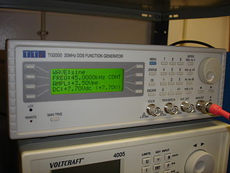
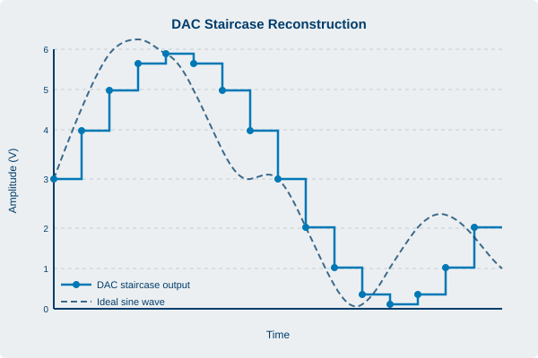
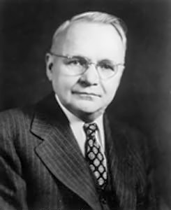
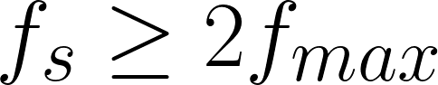
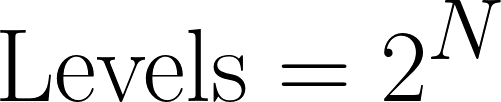

Appendix A: Glossary of Terms
Arbitrary waveform generation borrows vocabulary from sampling theory, data conversion, RF engineering, and instrument control, and the same word sometimes means slightly different things in each. This glossary collects the terms used throughout the book and defines them as a practicing engineer would use them at the bench. Definitions are general engineering knowledge, not product claims. Where a Berkeley Nucleonics instrument is mentioned, treat the figures as a snapshot and confirm current numbers against the datasheet at berkeleynucleonics.com.
A
Aliasing. The distortion that occurs when a signal contains frequency content above the Nyquist frequency, causing those components to fold back and appear as lower, false frequencies in the output. In an AWG, aliasing limits how high in frequency you can faithfully reconstruct a waveform for a given sample rate, and it is the reason a reconstruction filter sits at the output.
Amplitude. The size of a signal, usually expressed as peak, peak-to-peak, or RMS voltage into a stated load. On an AWG the amplitude setting scales the full-scale range of the digital-to-analog converter, so changing amplitude changes how the stored sample values map to output volts.
Analog Bandwidth. The frequency at which the output amplitude has fallen by 3 dB relative to its low-frequency value, set by the output amplifier and reconstruction filter rather than the sample rate alone. Bandwidth and sample rate are related but distinct: you can have plenty of one and be limited by the other.
Arbitrary Waveform. A waveform defined point by point in memory rather than by a mathematical function selector, allowing any shape the sample resolution and memory depth can represent. This is what separates an AWG from a plain function generator.

Arbitrary Waveform Generator (AWG). An instrument that plays back a user-defined sequence of sample values through a digital-to-analog converter and a reconstruction filter to produce a precise analog signal. An AWG can reproduce standard functions, captured real-world signals, and entirely synthetic waveforms with equal ease.
ASK (Amplitude-Shift Keying). A digital modulation scheme that encodes data by switching the carrier amplitude between discrete levels. On-off keying, the simplest form, turns the carrier fully on and off.
B
Burst Mode. An output mode that emits a defined number of waveform cycles on each trigger event, then returns to idle. Burst is the workhorse for radar pulses, ultrasound pings, and any scenario that needs a finite count of cycles rather than a continuous tone.
C
Chirp (LFM, Linear Frequency Modulation). A signal whose instantaneous frequency sweeps linearly across a span during the pulse, widely used in radar and sonar for pulse compression. Chirps trade a long, low-power transmit pulse for fine range resolution after matched filtering.
Clock (Sample Clock). The timing reference that steps the digital-to-analog converter from one sample to the next. Its rate sets the sample rate, and its stability and jitter directly limit the spectral purity of the output.
Code (DAC Code). The integer value, drawn from the converter's quantization range, that the DAC converts into a specific output level. A 14-bit converter has 16,384 distinct codes; a 16-bit converter has 65,536.
Crest Factor. The ratio of a signal's peak amplitude to its RMS value, often expressed in decibels. High-crest-factor signals such as multitone and OFDM waveforms force you to back off average power to avoid clipping the peaks.
D

DAC (Digital-to-Analog Converter). The component that turns each stored sample code into a proportional analog voltage or current. Its resolution, speed, and linearity set the ceiling on an AWG's fidelity.
dBc. Decibels relative to the carrier, used to express the level of a spur, harmonic, or noise component compared with the main signal. A spur at minus 60 dBc sits a millionth of the carrier power below it.
dBm. Decibels relative to one milliwatt, an absolute power unit. Zero dBm is 1 mW, which is about 0.224 V RMS into 50 ohms; plus 10 dBm is 10 mW.
Deterministic Jitter. The bounded, data-dependent or periodic component of timing jitter, as distinct from random jitter. It comes from identifiable causes such as crosstalk, duty-cycle distortion, or reflections, and it does not grow without limit as you observe longer.
Differential Output. A two-wire output that carries a signal and its inverse, so the receiver reads the difference between them. Differential drive rejects common-mode noise and doubles the available swing compared with a single-ended output of the same rail.
Direct Digital Synthesis (DDS). A technique that generates a waveform by stepping a phase accumulator at a fixed clock rate and looking up the corresponding amplitude in a waveform table. DDS gives fine frequency resolution and fast, phase-continuous frequency changes, which is why it underpins many function and sweep modes.
Dither. A small amount of noise added deliberately before quantization to randomize the quantization error, trading a slightly higher noise floor for the removal of correlated spurs. Done well, dither makes a converter's distortion behave more like benign noise.
Dynamic Range. The ratio between the largest and smallest signals an instrument can handle at once, typically the span from full scale down to the noise or spur floor. It tells you whether a small feature will survive in the presence of a large one.
E
ENOB (Effective Number of Bits). A measured figure of merit that expresses real converter performance, including noise and distortion, as the bit count of an ideal converter with the same signal-to-noise-and-distortion ratio. ENOB is always lower than the nominal bit count, and the gap is where the engineering lives.
Envelope. The slowly varying outline that bounds a faster carrier, describing how amplitude changes over time. Pulse shaping, AM, and IQ baseband design all work in terms of the envelope.
External Trigger. A signal applied to a dedicated input that starts, gates, or advances waveform playback in response to an event outside the instrument. External triggering is how an AWG synchronizes to the rest of a test system.
F
Function Generator. An instrument that produces standard waveforms such as sine, square, triangle, and ramp from built-in generators, usually with adjustable frequency, amplitude, and offset. It is the simpler ancestor of the AWG, fixed to a menu of shapes rather than arbitrary memory playback.
FSK (Frequency-Shift Keying). A digital modulation scheme that encodes data by switching the carrier between two or more discrete frequencies. It is robust and simple, which keeps it in service for telemetry and low-rate links.
G
Gated Mode. An output mode in which the waveform plays only while an external gate signal is asserted and pauses or stops when it is removed. Unlike burst, which counts cycles, a gate controls duration directly.
Glitch Energy. The transient area, measured in volt-seconds, of the unwanted spike a DAC produces at a code transition, especially at major-carry boundaries. Large glitch energy shows up as distortion and spurs, so converter designers work hard to keep it small.
Granularity. The required quantization of waveform length, meaning that the number of samples in a segment must be a multiple of some fixed value set by the architecture. Granularity constraints affect how cleanly a loop closes and how precisely you can set a period.
H
Harmonic Distortion. Unwanted signal energy at integer multiples of the fundamental frequency, produced by nonlinearity in the converter and output stage. It is often summarized as total harmonic distortion (THD), the combined power of the harmonics relative to the fundamental.
Holdoff. A programmed dead time after a trigger during which further triggers are ignored, used to prevent retriggering on noise or on unwanted edges within a burst. Holdoff buys clean, predictable spacing between accepted events.
I
Image (Spectral Image). A replica of the desired signal that appears around multiples of the sample rate as a consequence of sampling. The reconstruction filter exists to suppress these images so that only the wanted band reaches the output.
Interpolation. The process of computing intermediate sample values to raise the effective sample rate, often performed in a digital filter ahead of the DAC. Interpolation pushes the spectral images farther from the signal band and eases the reconstruction filter's job.
IQ Modulation. A method that represents a signal by two baseband components, in-phase (I) and quadrature (Q), which together define both amplitude and phase of a carrier. IQ is the native language of modern digital communications, and a two-channel AWG can supply the I and Q baseband pair directly.
J
Jitter. Short-term variation in the timing of clock or signal edges away from their ideal positions. In an AWG, sample-clock jitter modulates the output in time and raises the noise floor, particularly for high-frequency content.
M
Marker. A separate digital output, aligned to specific points in a waveform, used to trigger or synchronize other instruments. Markers let a stored waveform announce its own key moments to the rest of the bench.
Memory Depth. The number of samples the waveform memory can hold, which sets the longest unique signal you can play before repeating or sequencing. Deeper memory buys longer records, finer detail, or both, and it is often the quiet constraint behind a complex test.
Modulation Index. A measure of how strongly a carrier is modulated, such as the ratio of peak deviation to a reference in FM or the depth fraction in AM. It sets occupied bandwidth and, for analog schemes, the trade between signal strength and distortion.
N

Nyquist Frequency. Half the sample rate, the highest frequency that sampling can represent without aliasing. Signal content must stay below it for faithful reconstruction.

Nyquist Zone. One of the equal frequency bands, each half the sample rate wide, into which the spectrum divides. The first zone runs from DC to the Nyquist frequency; higher zones contain the spectral images, and some advanced techniques deliberately operate in them.
O
Offset (DC Offset). A constant voltage added to the waveform, shifting the whole signal up or down relative to ground. Offset positions a signal within a device's input window without changing its shape.
Oversampling. Running the sample rate well above the minimum the Nyquist criterion demands. Oversampling relaxes the reconstruction filter, spreads quantization noise over a wider band, and improves in-band fidelity.
P
Phase Accumulator. The register at the heart of a DDS that adds a fixed increment on every clock cycle, with its overflow tracing out the phase of the output waveform. The size of the increment sets the frequency, and the accumulator's width sets the frequency resolution.
Phase Noise. The rapid, random fluctuation of a signal's phase, seen in the frequency domain as a skirt of noise around the carrier and specified in dBc per hertz at a given offset. It is the spectral fingerprint of timing instability and a key limit for coherent and communications work.
Pulse Repetition Interval (PRI). The time between the start of one pulse and the start of the next in a pulsed signal, the reciprocal of the pulse repetition frequency. PRI is a defining parameter in radar, and agile or staggered PRI is a common test requirement.
Q
Quantization Noise. The error introduced when a continuous amplitude is rounded to the nearest available DAC code, modeled as a noise floor that sets the best achievable signal-to-noise ratio for an ideal converter. Each additional bit of resolution lowers it by about 6 dB.
R
Ramp. A waveform whose amplitude rises (or falls) linearly with time, also called a sawtooth when it resets sharply. Ramps drive sweeps, scan generators, and time-base references.
Reconstruction Filter. The analog low-pass filter at a DAC's output that removes the spectral images and smooths the sampled staircase into a continuous waveform. Its cutoff and roll-off shape the usable bandwidth and the cleanliness of the output.
Reference Clock (10 MHz). A common timing reference, conventionally a 10 MHz signal, shared between instruments so that they hold a common sense of frequency and phase. Locking AWGs and analyzers to one reference is the first step toward coherent multi-instrument measurements.

Resolution (Vertical). The number of bits a DAC uses to represent each sample, which fixes how finely the output amplitude is quantized. More vertical bits means smaller steps, a lower quantization floor, and more usable dynamic range.
Rise Time. The time a signal takes to transition from 10 percent to 90 percent of its final value, a direct measure of edge speed and an inverse indicator of bandwidth. Fast edges demand both fast converters and wide analog bandwidth to survive to the output.
S
Sample. A single amplitude value, stored as a DAC code, representing the signal at one instant in time. A waveform is just an ordered list of samples played at the sample rate.
Sample Rate. The number of samples the DAC converts per second, expressed in samples per second (Sa/s) and its multiples (MSa/s, GSa/s). It sets the Nyquist frequency and, with memory depth, the duration of a unique record.
Sequencing. Chaining stored waveform segments into a longer scenario using loops, jumps, conditional branches, and repeat counts, so that a finite memory plays a long or adaptive signal. Sequencing turns an AWG from a single-shot player into a scenario engine.
SFDR (Spurious-Free Dynamic Range). The ratio, usually in dBc, between the fundamental and the largest spurious component anywhere in the output spectrum. SFDR tells you how small a real signal can be and still be distinguished from the instrument's worst spur.
sin(x)/x (Sinc) Roll-off. The gentle amplitude droop across frequency that a zero-order-hold DAC imposes on its output, following the shape of the sinc function. Many AWGs apply an inverse-sinc filter to flatten the band before the Nyquist edge.
Single-Ended Output. An output referenced to ground on a single conductor, the common arrangement for general-purpose signals. It is simpler than differential drive but more exposed to common-mode noise.
Skew. A timing offset between channels or between signal lines that should be aligned, measured as the difference in their edge arrival times. Multichannel work, especially IQ and digital buses, depends on holding skew to a small, calibrated value.
SNR (Signal-to-Noise Ratio). The ratio of signal power to the total noise power in a defined bandwidth, usually expressed in decibels. It is a headline measure of how clean an output is, and quantization, jitter, and thermal noise all chip away at it.
Spurious-Free Dynamic Range. See SFDR.
Standard Function. One of the built-in canonical waveforms (sine, square, ramp, triangle, pulse, noise, DC) that an instrument can generate without a user-supplied memory pattern. Standard functions cover routine signals so arbitrary memory is reserved for the unusual ones.
T
Trigger. An event, internal or external, that starts, advances, or gates waveform output. Triggering is how an AWG decides not just what to play but exactly when to play it.
U
Update Rate. The rate at which the DAC is loaded with new sample values, effectively the sample rate viewed from the playback side. A higher update rate supports higher output frequencies and finer time resolution.
V
Vector Signal Generation. The creation of modulated RF signals defined by their IQ components, allowing arbitrary digital and analog modulation formats to be produced from baseband. A wideband AWG can serve as the engine of a vector signal source by supplying the IQ or direct-RF waveform.
Vpp (Volts Peak-to-Peak). The total voltage swing of a signal from its most negative to its most positive excursion. It is the most common way to state AWG amplitude, since it maps directly onto the converter's full-scale range.
W
Waveform. The shape of a signal as a function of time, whether a simple tone or a complex captured record. In an AWG it exists as the ordered set of samples held in memory.
Waveform Memory. The fast storage that holds the sample values played back through the DAC, the resource that memory depth measures. Its size and how it is partitioned govern how long and how complex a played signal can be.
Z
Zero-Order Hold. The DAC behavior of holding each sample value constant until the next clock edge, producing the characteristic staircase output. The hold is what creates both the spectral images and the sin(x)/x roll-off that the reconstruction stage must address.